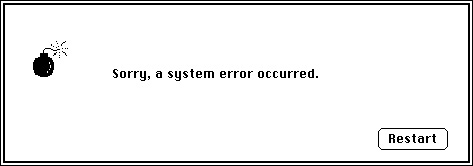
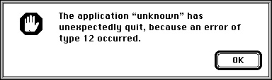

About the System Error Handler
The System Error Handler employs a mechanism that allows for display of simple alert boxes even when the Control Manager, Dialog Manager, and Memory Manager might not be able to function properly. System Error Handler alert boxes can therefore be displayed at times when the Dialog Manager cannot be called. This mechanism is useful at two times. First, at system startup time, the Dialog Manager may not yet have been initialized. Second, after a system error occurs, using the Dialog Manager or Memory Manager may be impossible or cause a system crash.Because the System Error Handler cannot use Dialog Manager resources to store representations of its alert boxes, it defines its own resource, the system error alert table resource, to store such information. This resource type is described in "The System Error Alert Table Resource" beginning on page 2-16. The system alert table resource defines for each system error the contents of the system alert box to be displayed. For example, depending on the system error that occurred, the system error alert box may contain one or more buttons, typically a Restart and a Continue button.
At system startup time, the System Error Handler presents the system startup alert box, shown in Figure 2-1.
Figure 2-1 The system startup alert box
The system startup alert box can take different forms. In particular, if an error occurs during the startup process, the System Error Handler might inform the user of the error by displaying an additional line of information in the alert box. The System Error Handler also uses the system startup alert box to post special messages to inform the user about the status of the system. For example, in System 7 and later, if the user holds down the Shift key while starting up, system extensions are disabled, and the system startup alert box includes the message "Extensions off." This is illustrated in Figure 2-2.
Figure 2-2 The system startup alert box when extensions have been disabled
Other messages that may be displayed at startup time include "Debugger Installed," "Disassembler Installed," and "System 7.1 needs more memory to start up."
The System Error Handler also displays an alert box when the Operating System or some other software invokes the
SysErrorprocedure. Figure 2-3 illustrates a system error alert box, sometimes called a bomb box. The conditions under which a system error occur are described in the next section, "System Errors."Figure 2-3 The system error alert box

The system error alert box presents some information about the type of error that has occurred and also includes buttons to allow possible recovery from the error. The user may click the Restart button, in which case the System Error Handler attempts to restart the computer. (Such attempts are not always successful, and the computer may freeze, forcing the user to flip the power switch or depress the reset switch.) Some system error alert boxes have Continue buttons. If the user clicks the Continue button, the System Error Handler attempts to execute the application's resume procedure. Resume procedures are discussed in "Resume Procedures" on page 2-11. If no resume procedure has been defined, then only the Restart button is available.
A close examination of the button in Figure 2-3 reveals that the button has a different appearance from that of buttons displayed by the Control Manager. This is because the System Error Handler does not use the Control Manager to create buttons. Instead, it draws the buttons itself and highlights them when the mouse is clicked within the button area.
- Note
- The layout and form of the system error alert box have changed considerably in different versions of system software. In early versions of system software, there was always a Resume button, which had the same effect as the Continue button, but it was grayed out when no resume procedure was defined. The Resume and Restart buttons were both at the left of the alert box. In some versions of system software, information about the type of error was displayed at the bottom of the alert box, and the ID information may have been conveyed in words ("bus error") instead of numbers ("ID = 1"). However, your application should not need to be familiar with the layout of the system error alert box.

System Errors
A system error is the result of the detection of a problem by the microprocessor or the Operating System. For example, if your application attempts to execute a system software routine that is not available on a certain Macintosh computer, the microprocessor detects the exception. The Operating System then calls theSysErrorprocedure to produce a system error alert box. Similarly, the Operating System itself might detect a problem; for example, it might detect that a menu record that is needed has been purged. In this case, the Operating System callsSysErrordirectly.Your application can also call
SysErrorif it detects that something that never should happen actually has happened. Ordinarily, it is more graceful for an application to use the Dialog Manager to warn the user that an error has occurred. You should call theSysErrorprocedure only if there is reason to believe that an abnormal condition could prevent the Dialog Manager from working correctly. The Dialog Manager is described in the chapter "Dialog Manager" in Inside Macintosh: Macintosh Toolbox Essentials.Associated with each type of system error is a system error ID. This ID is typically presented to the user in the system error alert box. Although the system error IDs are meaningless to most users, a user can report the ID to you, thus possibly making it easier for you to track down the problem and provide the user with a solution.
Table 2-1 lists and briefly describes the system error IDs that are currently defined. Note, however, that sometimes system error IDs may be misleading. For example, your application might make an invalid memory reference that does not cause a system error immediately. However, the effects of that reference could cause another problem leading to a system error of a different type.
Note also that some system errors occur in the ordinary course of an application's execution but are handled by the Operating System with no need to display an error message to the user. For example, when virtual memory is in operation and an application attempts to access memory that has been paged out, a bus error is generated. Because the Virtual Memory Manager intercepts the bus error and determines that memory needs to be paged in, this error is generated transparently to the user. If possible, when a system error occurs, the System Error Handler stops execution of the application that caused the error and displays an alert box with the message "Application has unexpectedly quit." (See Figure 2-4 on page 2-12 for an example of this alert box.)
Table 2-1System error IDs ID and name Explanation 1 (Bus error) A memory reference was invalid. This is the most common type of system error. An application might have tried to access memory in another application's partition or in a portion of memory not accessible to the application.
Typically, this error occurs if your application uses a handle
or pointer reference that is no longer valid or was never valid. For example, if your application does not initialize a variable of typeHandleorPtrto the correct value and then tries to use that value as a memory reference, a bus error could occur.
Or if you have made an error in performing pointer arithmetic,
a bus error could occur.This error could also occur if your application attempts to
access a block of memory that has been moved or disposed of. Once your application disposes of a block of memory, either directly or indirectly, all pointer and handle references to
that block of memory are invalid and could cause bus errors.If your application dereferences a handle, calls a routine that could move or purge memory, and then relies on the master pointer value, a bus error could occur. See Inside Macintosh: Memory for more information.
If your application is careless in using the Memory Manager's
BlockMoveprocedure or another technique to copy bytes directly, data structures used by the Memory Manager could be altered and a bus error generated.2 (Address error) A reference to a word (2 bytes) or long word (4 bytes) was not on a word boundary. An address error is often simply a bus error in which the memory reference happens to be odd. Thus, any programming errors that could cause a bus error might result in an address error as well. Indeed, sometimes the same programming error can generate both types of errors if you execute the offending code several times.
Address errors are often microprocessor-specific. That is, code that executes correctly on MC68030 microprocessors might generate an address error on MC68000 microprocessors. This is most likely to be a problem for assembly-language programmers.
3 (Illegal instruction) The microprocessor attempted to execute an instruction not defined for that version of the microprocessor. This might occur if you set a compiler to generate MC68030 code and then attempt to execute that code on a MC68000 microprocessor. Attempting to execute PowerPC code on a MC680x0 microprocessor could also cause this problem. Typically, this problem occurs only if you are programming in assembly language or if your compiler generates illegal instructions. If your application (either intentionally or unintentionally) modifies its own code while executing, then this problem could also occur.
4 (Zero divide) The microprocessor received a signed divide ( DIVS) or unsigned divide (DIVU) instruction, but the divisor was 0.
When you write code that performs the division operation,
you should ensure that the divisor can never be 0, unless you are using Operating System or SANE numeric types that support division by 0.5 (Check exception) The microprocessor executed a check-register-against-bounds ( CHK) instruction and detected an out-of-bounds value. If you are programming in a high-level language, this might occur
if you have enabled range-checking and a value is out of range (for example, you attempt to access the sixth element of a five-element array).6 (TrapV exception) The microprocessor executed a trap-on-overflow ( TRAPV) instruction and detected an overflow. If you are programming
in a high-level language, this might occur if you have enabled integer-arithmetic overflow checking and an overflow occurs.7 (Privilege violation) The Macintosh computer was in a mode that did not allow execution of the specified microprocessor instruction. This should not happen because the Macintosh computer always runs in supervisor mode. However, if you are programming in assembly language, this error could occur if you execute an erroneous return-from-execution ( RTE) instruction.8 (Trace exception) The trace bit in the status register is set. Debuggers use this error to force code execution to stop at a certain point. If you are programming in a high-level language, this system error should always be intercepted by your low-level debugger. 9 (A-line exception) The trap dispatcher failed to execute the specified system software routine. This error might occur if you attempt to execute a Toolbox routine that is not defined in the version of the system software that is running. 10 (F-line exception) Your application executed an illegal instruction. 11 (Miscellaneous exception) The microprocessor invoked an exception not covered by system error IDs 1 to 10. This exception might be generated in the case of a hardware failure. 12 (Unimplemented core routine) The Operating System encountered an unimplemented trap number. 13 (Spurious interrupt) The interrupt vector table entry for a particular level of interrupt is NIL. This error usually occurs with level 4, 5, 6, or 7 interrupts. Typically, this error should affect only developers of low-level device drivers, NuBus cards, and other expansion devices.14 (I/O system error) A Device Manager or Operating System queue operation failed. This might occur if the File Manager attempts to remove an entry from an I/O request queue, but the queue entry has an invalid queue type (perhaps the queue entry is unlocked). Or this might occur as a result of a call to FetchorStash, but thedCtlQHeadfield wasNIL. This error can also occur if your driver has purged a needed device control entry (DCE).15 (Segment loader error) A call was made to load a code segment, but a call to GetResourceto read the segment into memory failed. This could occur if your application attempts to load a segment that does not exist, or if your application attempts to load a segment but there is not enough memory for it in the application heap. When an attempt to load a code resource with resource ID 0 fails, a system error with ID 26 is generated instead.16 (Floating-point error) The halt bit in the floating-point environment word was set. 17-24 (Can't load package) The Package Manager attempted to load a package into memory, but the call to GetResourcefailed. This could occur because the system file is corrupted, or because there is not enough memory for the package to be loaded. For example, if you call a List Manager routine when memory is very low, theSysErrorprocedure could be executed.25 (Out of memory) The requested memory block could not be allocated in the heap because there is insufficient free space. Typically, a Toolbox routine generates this system error if it requires heap space to run but there is insufficient space. Your application should prevent this from occurring by ensuring that it always leaves enough memory for Toolbox operations. See Inside Macintosh: Memory for more details. You can also get this error if the Package Manager was unable
to load the Apple Event Manager (Pack 8). See the chapter "Package Manager" in this book for an explanation of this error.26 (Segment loader error) A call was made to load a code segment with resource ID 0, but the call to GetResourcefailed. This usually occurs if your application attempts to execute a nonexecutable file.You can also get this error if the Package Manager was unable
to load the Program-to-Program Communications (PPC) Toolbox package (Pack 9). See the chapter "Package Manager" in this book for an explanation of this error.27 (File map destroyed) The File Manager encountered a paradox. A logical block number was found that is greater than the number of the last logical block on the volume or less than the logical block number of the first allocation block on the volume. The disk is probably corrupted. 28 (Stack overflow error) The Operating System detected that the application's stack collided with its heap. This could happen when a deeply nested routine is executed or when interrupt routines use more stack space than available. If your application relies on recursion,
it should monitor the size of the stack to prevent such an error from occurring.If this error occurs simply because your application attempted to execute a deeply nested routine, you can prevent this from occurring by increasing the minimum size of the stack at application startup. Because the size of the stack may differ from one Macintosh model to another, an application might encounter no problems on a Macintosh LC but crash on a Macintosh Plus, for example. For more information, see Inside Macintosh: Memory.
You can also get this error if the Package Manager was unable
to load the Edition Manager (Pack 11). See the chapter "Package Manager" in this book for an explanation of this error.30 (Disk insertion required) A necessary disk is not available. The System Error Handler responds to this error by requesting that the user insert the requested disk. Often, the user can cancel this alert box by pressing Command-period repeatedly; in certain circumstances, however, pressing Command-period repeatedly can lead to a system crash. You can also get this error if the Package Manager was unable
to load the Data Access Manager (Pack 13). See the chapter "Package Manager" in this book for an explanation of this error.31 (Wrong disk inserted) The user inserted the incorrect disk in response to a disk-insertion request. The System Error Handler ejects the disk and allows the user to insert another. You can also get this error if the Package Manager was unable
to load the Help Manager (Pack 14). See the chapter "Package Manager" in this book for an explanation of this error.33 (Negative zcbFreevalue)The Memory Manager's calculation of the number of bytes free in a heap zone (that is, the value of the zcbFreefield) resulted in a negative number. Your application might have used up too much memory in the heap zone, or the heap is corrupted41 (Finder not found) The Operating System could not locate the Finder on the disk. The disk might be corrupted. 84 (Menu purged) The Menu Manager attempted to access information about a menu, but the menu record was purged. You should ensure that all menus stored in your application's resource file are marked as unpurgeable. 100 (Can't mount system startup
volume)The Operating System could not mount the system startup volume and thus is unable to read the system resource file into memory. The startup volume could be corrupted or broken. Your application can force startup on another volume by clearing parameter RAM, as discussed in the chapter "Parameter RAM Utilities" in this book. 32767 (Default system error) This is the default system error that executes when an undefined problem occurs. Your application can call the SysErrorprocedure with this value.Resume Procedures
The Operating System supports a mechanism that allows your application to resume execution after a system error if the user clicks the Continue button (or the Resume button in earlier versions of system software). When initializing the Dialog Manager using theInitDialogsprocedure, your application passes a pointer to a resume procedure or passesNILif no resume procedure is desired. A resume procedure takes no parameters.In general, you should not write code to allow an application to continue to execute normally after a system error has occurred. Because current versions of system software allow multiple applications to be open at once, a system error could affect other processes than the one that is executing. Indeed, the System Error Handler often simply stops execution of the application that caused the error rather than present the system error alert box. In this case, the Finder reports that the application has unexpectedly quit, as shown in Figure 2-4.
Figure 2-4 Handling of a nonfatal system error in System 7

An application that attempts to resume execution after a system error is likely to encounter the same problem again and might even encounter more serious problems. In early versions of system software, such an attempt constituted a harmless last-ditch effort by an application to salvage itself. In current versions of system software, such an attempt may cause a fatal system error--that is, a system error that crashes the entire system--even if the initial system error was nonfatal.
If your application is designed to work with System 7 only, you should always pass
NILtoInitDialogsand forego a resume procedure. You might alternatively pass a pointer to a simple resume procedure that simply quits the program, as illustrated in Listing 2-1.Listing 2-1 A simple resume procedure
PROCEDURE MyResumeProc; BEGIN ExitToShell; END;If you wish, you might write a custom resume procedure that you install only on Macintosh computers running versions of system software prior to System 7. Typically, such resume procedures simply jump to the beginning of the application's main event loop and hope for the best. Because Pascal does not permit a procedure to include a GOTO statement that references a label outside its scope, resume procedures typically are written in assembly language.
- WARNING
- Implementing a resume procedure is not an adequate substitute for quality assurance. Your application should not, for example, allow the user to open so many documents that memory runs out, causing a system error. Calling the System Error Handler's
SysErrorprocedure to report a problematic condition to the user might cause a system crash even if no crash would have otherwise occurred and even if your application uses the simple resume procedure defined in Listing 2-1.